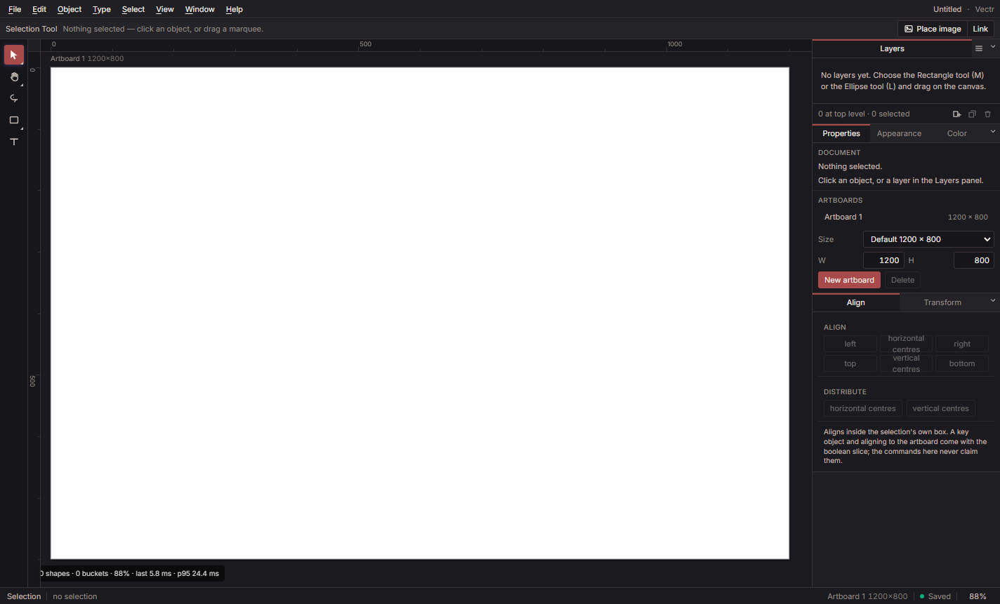

Draw like Illustrator.
Ship React.
Vectr is a desktop-first vector design tool with Illustrator's conventions and its own compiler. Every layer becomes a readable React component styled with Tailwind.

Every layer becomes a component.
Each layer gets a stable, readable name. Groups compose their children. Styling lands in Tailwind, with the smallest honest CSS or SVG adjunct where Tailwind can't express something. Pick a layer to see how it compiles.
Illustrative output. The compiler arrives in Phase 10.
Built the way a drawing tool has to be built.
A versioned document with exact undo inverses, one validated command for every action, and tools as state machines. Vectr is a vector illustration application, not a whiteboard.
- Fifteen tools
- Selection and Direct Selection with their flyout, Lasso, seven shape tools, Type, Hand, and Zoom. All state machines.
- Real transforms
- Move, eight-handle scale in the object's own frame, rotation with a 15° Shift snap, Alt-drag to duplicate, and arrow-key nudging.
- Precision canvas
- Multiple artboards with size presets, rulers, a grid under the artwork, and guides that snap and live in the file.
- Paint that behaves
- Strokes with caps, joins, dashes, and alignment. Linear and radial gradients, sixteen blend modes, and CMYK or spot swatches.
- Composition
- Vector clipping masks, isolation mode, nested groups, Arrange, Align and distribute, and cut, copy, paste.
- Type and images
- Point text with in-place editing and missing-font reporting. Embedded and linked images, relink, crop, and raster alpha masks.
- Layers you can work in
- Reorder, rename, nest, lock and hide with inheritance, live thumbnails, and drag-into-group.
- A live interface
- Hover outlines from the same hit test the tools use, per-tool cursors, and number fields that accept arithmetic like 120+30.
- Documents that hold
- A versioned native format with byte-stable saves, autosave, crash recovery of the whole project folder, and a close guard.
- No dead controls
- A capability that isn't built isn't displayed. Every shipped limitation is written down.
Phase 4 is complete. Phase 5, the Bézier path model, is next.
| Area | State |
|---|---|
| Document, undo/redo, autosave, recovery | Shipped, 272 tests |
| Tools, transforms, rotation, zoom | Shipped, all twelve as state machines |
| Paint | Shipped. No mesh, patterns, or width profiles yet |
| Artboards, rulers, grid, guides | Shipped. No page reordering |
| Text | Point text only. Area, path, and threaded text are Phase 6 |
| File interchange | Native format only. SVG, PDF, and .ai are Phase 8 |
| React + Tailwind compiler | Phase 10 |
| macOS and Linux | Phase 9 |
Strict layers, enforced on every test run.
A module may only import from a lower layer. scripts/check-layers.mjs fails the build otherwise. The interface is one component kit: one button, one numeric field, one menu row. A test fails on any hand-written <button> outside it.
Electron 35, React 19, Tailwind CSS 4, Vite 6, TypeScript 5.7, CanvasKit (Skia), and node:test. Files are content-addressed project folders with canonical JSON manifests and atomic writes.
- L7 electron/, dev, bench, scripts
- L6 app: shell, canvas host, panels
- L5 state, commands, editing rules
- L4 tools as state machines
- L3 render, file format, recovery
- L2 ops: path operations (Phase 5)
- L1 doc: model, commands, history
- L0 geom: curves, transforms, colour
The road to the compiler.
- 5Bézier paths, the Pen, anchor editing, Pathfinder, Shape Builder, width profiles, compound paths
- 6Type: area, on a path, threaded, character and paragraph styles
- 7Appearance stacks, transparency groups, effects, brushes, patterns, symbols
- 8SVG, PDF, and Illustrator file interchange with a published fidelity matrix
- 9Core parity gate: hardening, macOS and Linux, performance budgets, accessibility
- 10The React + Tailwind compiler
- 11–13MCP for account-scoped agents, cloud and collaboration, further expansion
Get started.
Windows: download Vectr 0.4.1 Setup - a per-user installer, one per phase. It is unsigned, so SmartScreen warns once and the release notes explain it.
Or build it from source: Node.js 22+ and npm. Windows is the reference platform today.
If npm run smoke fails with reading 'whenReady', your shell has ELECTRON_RUN_AS_NODE=1 set. Clear it for the run. That is not a Vectr bug.
npm install
npm start # build and launch the editor
# verify it
npm run typecheck # tsc --noEmit
npm test # 272 tests + layer rule + UI standards
npm run build # vite build
npm run smoke # 158 packaged steps, seven reports